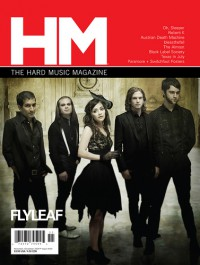

Flyleaf
|  |
| November 2009 HM |
Media coverage:
- Jan 2006 in HM "Hardnews: Flyleaf", by Chris Troutman
- Feb 2006 in CCM "Insider: Surprised By Joy", by Tony Shore
- Mar 2006 in HM "Live Report: Fall Brawl Tour", by Doug Van Pelt
- Apr 2006 in CCM "!Hard Music", by Doug Van Pelt
- Jan 2007 in CCM "Art Fully Alive", by John J. Thompson
- Feb 2007 in CCM "Poets, Preachers & Prophets", by John J. Thompson
- Mar 2007 in Relevant "Flyleaf", by Scott Gurley
- May 2007 in CCM "Story Behind the Song: Flyleaf"
- Sep 2007 in Ignite Your Faith "I Hated Everyone", by Todd Hertz
- Sep 2007 in CCM "Tour Scrapbook: Flyleaf", by Andy Argyrakis
- Jul 2009 in HM "Poster: Flyleaf"
- Nov 2009 in HM "Flyleaf", by Doug Van Pelt
- Jan 2010 in Group "Ideas: Ministry and Media: Flyleaf", by Scott Firestone IV
- May 2012 in HM "Flyleaf Has Lost One of Its Family Members", by Doug Van Pelt
- Oct 2012 in HM "Hardnews: Quick & Concise: Flyleaf Releasing New Album"
- Nov 2012 in HM "Flyleaf", by Daniel Garcia
- Sep 2014 in HM "Flyleaf v. 2014", by Sean Huncherick
Albums & reviews:
2005: Flyleaf
- Jan 2006 in HM, by Tim Hallila
- Jan 2006 in YouthWorker, by Dave Urbanski
- Nov 2009 in HM, by Matt Conner
- Feb 2011 in CCM Digital, by Andy Argyrakis
- Nov 2012 in HM, by Jeff Cunningham
- Dec 2012 in CCM Digital, by Matt Conner
- Sep 2014 in HM, by David Stagg
- 15 Nov 2014 in CCM Digital, by Matt Conner
Award Summary (Nominations / Wins)
Dove Awards- 2011 Dove Awards
- Rock Album: Memento Mori
- Rock Album: New Horizons
- 2006 Grammy Awards
- Producer of the Year, Non-Classical

© 2011 CMnexus. Last updated September 2019. Contact: editor -AT- cmnexus -DØT- org About